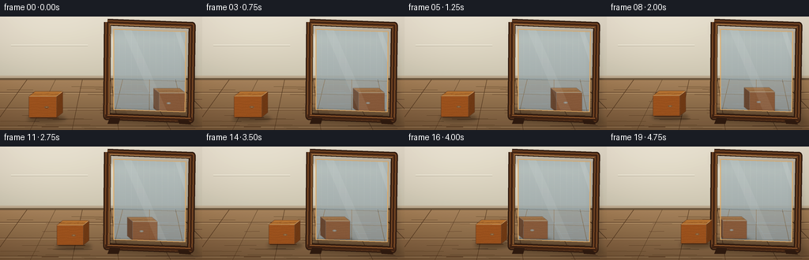
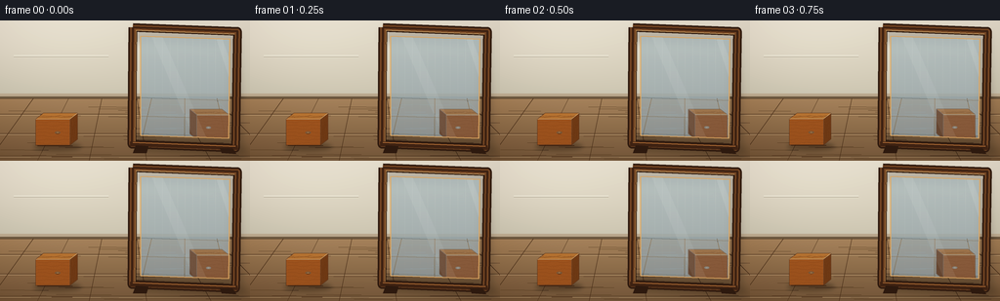

CODING AGENTS AS PIXEL WORLD MODELS
traex/GPT-5.6-Sol · phygen_061
点击播放 · 原生 RGB 像素
逐轮保存的候选
回放视频、检查图与代码变化。
每份候选均可单独播放。实际图片检查记录在下方工具轨迹中。
候选 01播放与检查图
点击播放 · 原生 RGB 像素


展开代码变化
--- 上一保存版本
+++ 本次保存版本
@@ -0,0 +1,224 @@
+from pathlib import Path
+import math
+import numpy as np
+from PIL import Image, ImageDraw, ImageFilter
+import artifact_io
+
+# Deterministic, hand-rendered 3-D scene. The physical mirror plane is x=136:
+# the two cube centres are always equidistant from it and move at equal speed.
+W, H, N = 256, 144, 20
+S = 4
+SW, SH = W*S, H*S
+CASE_DIR = Path(__file__).resolve().parent
+
+def P(xy):
+ return tuple(int(round(v*S)) for v in xy)
+
+def POLY(points):
+ return [P(p) for p in points]
+
+def line(draw, points, fill, width=1):
+ draw.line(POLY(points), fill=fill, width=max(1, int(width*S)), joint='curve')
+
+def ellipse(draw, box, fill, outline=None, width=1):
+ draw.ellipse(P(box[:2])+P(box[2:]), fill=fill, outline=outline, width=max(1,int(width*S)))
+
+def gradient_scene():
+ yy, xx = np.mgrid[0:SH, 0:SW]
+ y = yy / S
+ x = xx / S
+ # warm plaster wall above, matte oak floor below
+ wall_t = np.clip(y / 82.0, 0, 1)
+ r = 225 - 28*wall_t
+ g = 219 - 27*wall_t
+ b = 203 - 31*wall_t
+ floor_t = np.clip((y-78)/66, 0, 1)
+ fr = 163 - 46*floor_t
+ fg = 130 - 39*floor_t
+ fb = 92 - 29*floor_t
+ use_floor = y >= 78
+ r = np.where(use_floor, fr, r)
+ g = np.where(use_floor, fg, g)
+ b = np.where(use_floor, fb, b)
+ # broad daylight from upper left and restrained vignette
+ light = 9*np.exp(-((x-45)**2/(2*65**2)+(y-21)**2/(2*40**2)))
+ vignette = 16*((x-128)**2/(128**2) + (y-70)**2/(95**2))
+ arr = np.dstack([r+light-vignette*.45, g+light-vignette*.50, b+light-vignette*.45])
+ return Image.fromarray(np.clip(arr,0,255).astype(np.uint8), 'RGB').convert('RGBA')
+
+def draw_room(base):
+ d = ImageDraw.Draw(base, 'RGBA')
+ # skirting board and horizon
+ d.rectangle((0, 75*S, SW, 80*S), fill=(182,166,141,255))
+ d.rectangle((0, 78*S, SW, 80*S), fill=(109,91,67,90))
+ line(d, [(0,80),(256,80)], (88,67,45,90), .7)
+ # floorboards: horizontal courses and perspective joints
+ for y in [96,116,139]:
+ line(d, [(0,y),(256,y)], (72,49,29,50), .65)
+ line(d, [(0,y+1),(256,y+1)], (237,208,164,35), .45)
+ for xb, xt in [(-12,34),(38,70),(91,104),(150,140),(216,180),(282,220)]:
+ line(d, [(xt,80),(xb,144)], (72,48,28,48), .65)
+ # fine wood-floor grain, static so the motion reads cleanly
+ rng = np.random.default_rng(601)
+ for _ in range(34):
+ y = float(rng.uniform(84,143)); x0=float(rng.uniform(0,220)); ln=float(rng.uniform(16,65))
+ line(d, [(x0,y),(min(256,x0+ln),y+rng.uniform(-.35,.35))], (73,48,28,int(rng.integers(11,28))), .38)
+ # distant understated wall molding
+ line(d, [(14,36),(111,36)], (255,252,237,65), .65)
+ line(d, [(14,37),(111,37)], (130,118,101,28), .45)
+
+def face_texture(size, base_rgb, seed, direction='h', reflected=False):
+ w,h=size
+ yy,xx=np.mgrid[0:h,0:w]
+ # mild directional illumination and tactile noise
+ rng=np.random.default_rng(seed)
+ noise=rng.normal(0,2.3,(h,w))
+ shade=(1-0.12*yy/max(1,h-1)) if direction!='v' else (1-0.11*xx/max(1,w-1))
+ arr=np.zeros((h,w,4),dtype=np.float32)
+ for k,c in enumerate(base_rgb): arr[:,:,k]=c*shade+noise
+ arr[:,:,3]=255
+ if reflected:
+ # cool/desaturate only slightly; it must unmistakably remain the same block
+ lum=arr[:,:,:3].mean(2,keepdims=True)
+ arr[:,:,:3]=arr[:,:,:3]*.76+lum*.14+np.array([3,8,13])
+ arr[:,:,3]=226
+ return Image.fromarray(np.clip(arr,0,255).astype(np.uint8),'RGBA')
+
+def paint_face(layer, pts, color, seed, orientation, reflected=False):
+ mask=Image.new('L',(SW,SH),0); md=ImageDraw.Draw(mask)
+ md.polygon(POLY(pts),fill=255)
+ tex=face_texture((SW,SH),color,seed,orientation,reflected)
+ layer.alpha_composite(Image.composite(tex,Image.new('RGBA',(SW,SH)),mask))
+ td=ImageDraw.Draw(layer,'RGBA')
+ # clipped wood grain made on its own layer
+ grain=Image.new('RGBA',(SW,SH),(0,0,0,0)); gd=ImageDraw.Draw(grain,'RGBA')
+ xs=[p[0] for p in pts]; ys=[p[1] for p in pts]
+ rng=np.random.default_rng(seed+90)
+ if orientation in ('front','top'):
+ for q in np.linspace(min(ys)+3,max(ys)-2,7):
+ phase=rng.uniform(0,6.2)
+ coords=[]
+ for xx in np.linspace(min(xs)-5,max(xs)+5,44):
+ wave=.55*math.sin(xx*.32+phase)+.16*math.sin(xx*.83+phase)
+ coords.append((xx,q+wave))
+ line(gd,coords,(77,35,14,68 if not reflected else 45),.48)
+ else:
+ for q in np.linspace(min(xs)+2,max(xs)-1,4):
+ coords=[]
+ phase=rng.uniform(0,6.2)
+ for yy0 in np.linspace(min(ys)-3,max(ys)+3,35):
+ coords.append((q+.35*math.sin(yy0*.3+phase),yy0))
+ line(gd,coords,(64,27,10,60 if not reflected else 38),.45)
+ grain.putalpha(Image.composite(grain.getchannel('A'),Image.new('L',(SW,SH),0),mask))
+ layer.alpha_composite(grain)
+ # bevel outline / face join
+ line(td, pts+[pts[0]], (76,37,17,150 if not reflected else 105), .65)
+ line(td, [pts[0],pts[1]], (255,226,167,100 if not reflected else 55), .5)
+
+def draw_cube(canvas, cx, by, size, reflected=False):
+ """A stable wooden cube; reflected=True reverses its 3-D handedness."""
+ w=size; h=size*.77; dep=size*.22
+ sg=-1 if reflected else 1
+ A=(cx-w/2,by-h); B=(cx+w/2,by-h); C=(cx+w/2,by); D=(cx-w/2,by)
+ Ash=(A[0]+sg*dep,A[1]-dep*.78); Bsh=(B[0]+sg*dep,B[1]-dep*.78)
+ side = [A,D,(D[0]+sg*dep,D[1]-dep*.78),Ash] if reflected else [B,Bsh,(C[0]+dep,C[1]-dep*.78),C]
+ top=[A,B,Bsh,Ash]
+ front=[A,B,C,D]
+ layer=Image.new('RGBA',(SW,SH),(0,0,0,0))
+ paint_face(layer,top,(194,125,57),41,'top',reflected)
+ paint_face(layer,side,(123,67,28),47,'side',reflected)
+ paint_face(layer,front,(169,92,36),43,'front',reflected)
+ dd=ImageDraw.Draw(layer,'RGBA')
+ # distinctive knot visible on both the real block and reversed image
+ kx=cx + (-.14 if reflected else .14)*w
+ ky=by-h*.48
+ ellipse(dd,(kx-w*.08,ky-w*.035,kx+w*.08,ky+w*.035),(74,34,13,65 if not reflected else 45))
+ ellipse(dd,(kx-w*.035,ky-w*.018,kx+w*.035,ky+w*.018),(219,142,63,55 if not reflected else 35))
+ # small crisp lower bevel
+ line(dd,[D,C],(73,34,15,130 if not reflected else 85),.8)
+ canvas.alpha_composite(layer)
+
+def mirror_glass_layer(base, cx_real, by_real, size):
+ # mirror aperture mask (slightly trapezoidal upright glass)
+ aperture=[(144,16),(235,19),(234,121),(144,118)]
+ mask=Image.new('L',(SW,SH),0); ImageDraw.Draw(mask).polygon(POLY(aperture),fill=255)
+ glass=Image.new('RGBA',(SW,SH),(0,0,0,0))
+ gd=ImageDraw.Draw(glass,'RGBA')
+ # cool reflected room, still allowing some depth and floor definition
+ gd.polygon(POLY(aperture),fill=(133,151,157,230))
+ # reflected wall light gradient strips
+ for yi in range(17,119):
+ t=(yi-17)/102
+ col=(183-int(38*t),198-int(40*t),199-int(36*t),190)
+ gd.line([P((143,yi)),P((236,yi+3))],fill=col,width=S)
+ # reflected horizon and floorboard perspective, all later clipped
+ line(gd,[(143,79),(235,82)],(79,96,97,95),.7)
+ for y in [98,116]: line(gd,[(143,y),(235,y+2.5)],(65,74,72,50),.55)
+ for x in [155,189,222]: line(gd,[(x,80),(x+(x-190)*.28,121)],(61,70,68,48),.55)
+ # reflection's floor contact shadow moves in exact lockstep
+ xr=272-cx_real
+ yr=by_real-6
+ shadow=Image.new('RGBA',(SW,SH),(0,0,0,0)); sd=ImageDraw.Draw(shadow,'RGBA')
+ ellipse(sd,(xr-size*.62,yr-2,xr+size*.62,yr+4),(32,44,44,85))
+ shadow=shadow.filter(ImageFilter.GaussianBlur(2.0*S))
+ glass.alpha_composite(shadow)
+ draw_cube(glass,xr,yr,size*.94,True)
+ # subtle silvering haze at perimeter and a diagonal light ribbon
+ gleam=Image.new('RGBA',(SW,SH),(0,0,0,0)); q=ImageDraw.Draw(gleam,'RGBA')
+ q.polygon(POLY([(155,16),(166,16),(211,120),(198,120)]),fill=(245,252,250,17))
+ q.polygon(POLY([(221,17),(227,18),(235,40),(235,60)]),fill=(255,255,255,23))
+ glass.alpha_composite(gleam)
+ glass.putalpha(Image.composite(glass.getchannel('A'),Image.new('L',(SW,SH),0),mask))
+ base.alpha_composite(glass)
+
+def draw_mirror_and_frame(base, cx_real, by_real, size):
+ # wall/floor cast shadow proves the mirror is upright and freestanding
+ sh=Image.new('RGBA',(SW,SH),(0,0,0,0)); sd=ImageDraw.Draw(sh,'RGBA')
+ sd.polygon(POLY([(138,119),(239,123),(255,137),(142,132)]),fill=(40,28,18,105))
+ sd.polygon(POLY([(136,10),(244,14),(248,130),(236,132),(233,24),(136,22)]),fill=(34,27,21,58))
+ sh=sh.filter(ImageFilter.GaussianBlur(4*S)); base.alpha_composite(sh)
+ mirror_glass_layer(base,cx_real,by_real,size)
+ d=ImageDraw.Draw(base,'RGBA')
+ outer=[(136,7),(243,11),(241,131),(135,127)]
+ inner=[(144,16),(235,19),(234,121),(144,118)]
+ # dark walnut upright frame, layered rails with warm highlights
+ line(d,outer+[outer[0]],(50,31,20,255),9.0)
+ line(d,outer+[outer[0]],(116,72,39,255),5.6)
+ line(d,outer+[outer[0]],(62,37,23,255),2.3)
+ line(d,inner+[inner[0]],(221,168,99,205),1.05)
+ line(d,[(139,10),(240,14)],(242,199,133,135),.75)
+ line(d,[(139,10),(138,124)],(224,165,92,100),.7)
+ # lower sill and two feet
+ d.polygon(POLY([(133,124),(243,128),(244,133),(133,129)]),fill=(64,38,23,255))
+ line(d,[(136,125),(241,129)],(181,115,59,180),1)
+ d.polygon(POLY([(139,128),(152,129),(150,136),(136,136)]),fill=(47,29,19,255))
+ d.polygon(POLY([(225,131),(238,131),(242,137),(227,136)]),fill=(47,29,19,255))
+
+def make_frame(i):
+ t=i/(N-1)
+ # gentle ease-in/out, used identically by object and image
+ u=t*t*(3-2*t)
+ cx=54 + 56*u
+ by=128 - 5*u
+ size=35 - 3*u
+ im=gradient_scene(); draw_room(im)
+ # Real block's floor shadow is drawn before mirror and block.
+ sh=Image.new('RGBA',(SW,SH),(0,0,0,0)); sd=ImageDraw.Draw(sh,'RGBA')
+ # Directional daylight shadow shortens very slightly near the upright mirror.
+ ellipse(sd,(cx-size*.55,by-2,cx+size*.82,by+5),(44,25,12,105))
+ sh=sh.filter(ImageFilter.GaussianBlur(2.25*S)); im.alpha_composite(sh)
+ draw_mirror_and_frame(im,cx,by,size)
+ draw_cube(im,cx,by,size,False)
+ # tiny warm contact occlusion anchors the moving block to the floor
+ d=ImageDraw.Draw(im,'RGBA'); line(d,[(cx-size*.45,by+.4),(cx+size*.58,by+.4)],(47,25,11,105),.65)
+ # filmic finish: downsample and very mild contrast/color grade
+ rgb=im.convert('RGB').resize((W,H),Image.Resampling.LANCZOS)
+ a=np.asarray(rgb).astype(np.float32)
+ a=(a-128)*1.035+128
+ # subtle warm highlights, cool mirror already preserved
+ a[:,:,0]+=1.4; a[:,:,2]-=.5
+ return np.clip(a,0,255).astype(np.uint8)
+
+frames=np.stack([make_frame(i) for i in range(N)],axis=0)
+artifact_io.save(frames,CASE_DIR)
+print(f"saved {len(frames)} RGB frames, shape={frames.shape}, dtype={frames.dtype}")
可观测工具轨迹
实际执行的命令与返回图片。
命令 1exit 0
/bin/bash -lc "cat prompt.txt && printf '\\n---RULES---\\n' && cat GENERATION_RULES.md && printf '\\n---SPEC---\\n' && cat task_spec.json"
命令 2exit 1
/bin/bash -lc "find . -maxdepth 2 -type f -printf '%p\\n' | sort && printf '\\nTOOLS\\n' && command -v ffmpeg && command -v python3 && python3 - <<'PY' mods=['PIL','numpy','cv2','imageio','moviepy','cairo','moderngl'] for m in mods: try: x=__import__(m); print(m,'OK',getattr(x,'__version__','')) except Exception as e: print(m,'NO',e) PY"
命令 3exit 0
/bin/bash -lc 'cat artifact_io.py'
命令 4exit 0
/bin/bash -lc 'for x in ffmpeg python3 convert magick; do printf "$x: "; command -v "$x" || true; done; python3 - <<'"'PY' mods=['PIL','numpy','cv2','imageio','moviepy'] for m in mods: try: x=__import__(m); print(m,'OK',getattr(x,'__version__','')) except Exception as e: print(m,'NO',repr(e)) PY"
命令 5exit 0
/bin/bash -lc "cat > generate.py <<'PY'
from pathlib import Path
import math
import numpy as np
from PIL import Image, ImageDraw, ImageFilter
import artifact_io
# Deterministic, hand-rendered 3-D scene. The physical mirror plane is x=136:
# the two cube centres are always equidistant from it and move at equal speed.
W, H, N = 256, 144, 20
S = 4
SW, SH = W*S, H*S
CASE_DIR = Path(__file__).resolve().parent
def P(xy):
return tuple(int(round(v*S)) for v in xy)
def POLY(points):
return [P(p) for p in points]
def line(draw, points, fill, width=1):
draw.line(POLY(points), fill=fill, width=max(1, int(width*S)), joint='curve')
def ellipse(draw, box, fill, outline=None, width=1):
draw.ellipse(P(box[:2])+P(box[2:]), fill=fill, outline=outline, width=max(1,int(width*S)))
def gradient_scene():
yy, xx = np.mgrid[0:SH, 0:SW]
y = yy / S
x = xx / S
# warm plaster wall above, matte oak floor below
wall_t = np.clip(y / 82.0, 0, 1)
r = 225 - 28*wall_t
g = 219 - 27*wall_t
b = 203 - 31*wall_t
floor_t = np.clip((y-78)/66, 0, 1)
fr = 163 - 46*floor_t
fg = 130 - 39*floor_t
fb = 92 - 29*floor_t
use_floor = y >= 78
r = np.where(use_floor, fr, r)
g = np.where(use_floor, fg, g)
b = np.where(use_floor, fb, b)
# broad daylight from upper left and restrained vignette
light = 9*np.exp(-((x-45)**2/(2*65**2)+(y-21)**2/(2*40**2)))
vignette = 16*((x-128)**2/(128**2) + (y-70)**2/(95**2))
arr = np.dstack([r+light-vignette*.45, g+light-vignette*.50, b+light-vignette*.45])
return Image.fromarray(np.clip(arr,0,255).astype(np.uint8), 'RGB').convert('RGBA')
def draw_room(base):
d = ImageDraw.Draw(base, 'RGBA')
# skirting board and horizon
d.rectangle((0, 75*S, SW, 80*S), fill=(182,166,141,255))
d.rectangle((0, 78*S, SW, 80*S), fill=(109,91,67,90))
line(d, [(0,80),(256,80)], (88,67,45,90), .7)
# floorboards: horizontal courses and perspective joints
for y in [96,116,139]:
line(d, [(0,y),(256,y)], (72,49,29,50), .65)
line(d, [(0,y+1),(256,y+1)], (237,208,164,35), .45)
for xb, xt in [(-12,34),(38,70),(91,104),(150,140),(216,180),(282,220)]:
line(d, [(xt,80),(xb,144)], (72,48,28,48), .65)
# fine wood-floor grain, static so the motion reads cleanly
rng = np.random.default_rng(601)
for _ in range(34):
y = float(rng.uniform(84,143)); x0=float(rng.uniform(0,220)); ln=float(rng.uniform(16,65))
line(d, [(x0,y),(min(256,x0+ln),y+rng.uniform(-.35,.35))], (73,48,28,int(rng.integers(11,28))), .38)
# distant understated wall molding
line(d, [(14,36),(111,36)], (255,252,237,65), .65)
line(d, [(14,37),(111,37)], (130,118,101,28), .45)
def face_texture(size, base_rgb, seed, direction='h', reflected=False):
w,h=size
yy,xx=np.mgrid[0:h,0:w]
# mild directional illumination and tactile noise
rng=np.random.default_rng(seed)
noise=rng.normal(0,2.3,(h,w))
shade=(1-0.12*yy/max(1,h-1)) if direction"'!='"'v' else (1-0.11*xx/max(1,w-1))
arr=np.zeros((h,w,4),dtype=np.float32)
for k,c in enumerate(base_rgb): arr[:,:,k]=c*shade+noise
arr[:,:,3]=255
if reflected:
# cool/desaturate only slightly; it must unmistakably remain the same block
lum=arr[:,:,:3].mean(2,keepdims=True)
arr[:,:,:3]=arr[:,:,:3]*.76+lum*.14+np.array([3,8,13])
arr[:,:,3]=226
return Image.fromarray(np.clip(arr,0,255).astype(np.uint8),'RGBA')
def paint_face(layer, pts, color, seed, orientation, reflected=False):
mask=Image.new('L',(SW,SH),0); md=ImageDraw.Draw(mask)
md.polygon(POLY(pts),fill=255)
tex=face_texture((SW,SH),color,seed,orientation,reflected)
layer.alpha_composite(Image.composite(tex,Image.new('RGBA',(SW,SH)),mask))
td=ImageDraw.Draw(layer,'RGBA')
# clipped wood grain made on its own layer
grain=Image.new('RGBA',(SW,SH),(0,0,0,0)); gd=ImageDraw.Draw(grain,'RGBA')
xs=[p[0] for p in pts]; ys=[p[1] for p in pts]
rng=np.random.default_rng(seed+90)
if orientation in ('front','top'):
for q in np.linspace(min(ys)+3,max(ys)-2,7):
phase=rng.uniform(0,6.2)
coords=[]
for xx in np.linspace(min(xs)-5,max(xs)+5,44):
wave=.55*math.sin(xx*.32+phase)+.16*math.sin(xx*.83+phase)
coords.append((xx,q+wave))
line(gd,coords,(77,35,14,68 if not reflected else 45),.48)
else:
for q in np.linspace(min(xs)+2,max(xs)-1,4):
coords=[]
phase=rng.uniform(0,6.2)
for yy0 in np.linspace(min(ys)-3,max(ys)+3,35):
coords.append((q+.35*math.sin(yy0*.3+phase),yy0))
line(gd,coords,(64,27,10,60 if not reflected else 38),.45)
grain.putalpha(Image.composite(grain.getchannel('A'),Image.new('L',(SW,SH),0),mask))
layer.alpha_composite(grain)
# bevel outline / face join
line(td, pts+[pts[0]], (76,37,17,150 if not reflected else 105), .65)
line(td, [pts[0],pts[1]], (255,226,167,100 if not reflected else 55), .5)
def draw_cube(canvas, cx, by, size, reflected=False):
\"\"\"A stable wooden cube; reflected=True reverses its 3-D handedness.\"\"\"
w=size; h=size*.77; dep=size*.22
sg=-1 if reflected else 1
A=(cx-w/2,by-h); B=(cx+w/2,by-h); C=(cx+w/2,by); D=(cx-w/2,by)
Ash=(A[0]+sg*dep,A[1]-dep*.78); Bsh=(B[0]+sg*dep,B[1]-dep*.78)
side = [A,D,(D[0]+sg*dep,D[1]-dep*.78),Ash] if reflected else [B,Bsh,(C[0]+dep,C[1]-dep*.78),C]
top=[A,B,Bsh,Ash]
front=[A,B,C,D]
layer=Image.new('RGBA',(SW,SH),(0,0,0,0))
paint_face(layer,top,(194,125,57),41,'top',reflected)
paint_face(layer,side,(123,67,28),47,'side',reflected)
paint_face(layer,front,(169,92,36),43,'front',reflected)
dd=ImageDraw.Draw(layer,'RGBA')
# distinctive knot visible on both the real block and reversed image
kx=cx + (-.14 if reflected else .14)*w
ky=by-h*.48
ellipse(dd,(kx-w*.08,ky-w*.035,kx+w*.08,ky+w*.035),(74,34,13,65 if not reflected else 45))
ellipse(dd,(kx-w*.035,ky-w*.018,kx+w*.035,ky+w*.018),(219,142,63,55 if not reflected else 35))
# small crisp lower bevel
line(dd,[D,C],(73,34,15,130 if not reflected else 85),.8)
canvas.alpha_composite(layer)
def mirror_glass_layer(base, cx_real, by_real, size):
# mirror aperture mask (slightly trapezoidal upright glass)
aperture=[(144,16),(235,19),(234,121),(144,118)]
mask=Image.new('L',(SW,SH),0); ImageDraw.Draw(mask).polygon(POLY(aperture),fill=255)
glass=Image.new('RGBA',(SW,SH),(0,0,0,0))
gd=ImageDraw.Draw(glass,'RGBA')
# cool reflected room, still allowing some depth and floor definition
gd.polygon(POLY(aperture),fill=(133,151,157,230))
# reflected wall light gradient strips
for yi in range(17,119):
t=(yi-17)/102
col=(183-int(38*t),198-int(40*t),199-int(36*t),190)
gd.line([P((143,yi)),P((236,yi+3))],fill=col,width=S)
# reflected horizon and floorboard perspective, all later clipped
line(gd,[(143,79),(235,82)],(79,96,97,95),.7)
for y in [98,116]: line(gd,[(143,y),(235,y+2.5)],(65,74,72,50),.55)
for x in [155,189,222]: line(gd,[(x,80),(x+(x-190)*.28,121)],(61,70,68,48),.55)
# reflection's floor contact shadow moves in exact lockstep
xr=272-cx_real
yr=by_real-6
shadow=Image.new('RGBA',(SW,SH),(0,0,0,0)); sd=ImageDraw.Draw(shadow,'RGBA')
ellipse(sd,(xr-size*.62,yr-2,xr+size*.62,yr+4),(32,44,44,85))
shadow=shadow.filter(ImageFilter.GaussianBlur(2.0*S))
glass.alpha_composite(shadow)
draw_cube(glass,xr,yr,size*.94,True)
# subtle silvering haze at perimeter and a diagonal light ribbon
gleam=Image.new('RGBA',(SW,SH),(0,0,0,0)); q=ImageDraw.Draw(gleam,'RGBA')
q.polygon(POLY([(155,16),(166,16),(211,120),(198,120)]),fill=(245,252,250,17))
q.polygon(POLY([(221,17),(227,18),(235,40),(235,60)]),fill=(255,255,255,23))
glass.alpha_composite(gleam)
glass.putalpha(Image.composite(glass.getchannel('A'),Image.new('L',(SW,SH),0),mask))
base.alpha_composite(glass)
def draw_mirror_and_frame(base, cx_real, by_real, size):
# wall/floor cast shadow proves the mirror is upright and freestanding
sh=Image.new('RGBA',(SW,SH),(0,0,0,0)); sd=ImageDraw.Draw(sh,'RGBA')
sd.polygon(POLY([(138,119),(239,123),(255,137),(142,132)]),fill=(40,28,18,105))
sd.polygon(POLY([(136,10),(244,14),(248,130),(236,132),(233,24),(136,22)]),fill=(34,27,21,58))
sh=sh.filter(ImageFilter.GaussianBlur(4*S)); base.alpha_composite(sh)
mirror_glass_layer(base,cx_real,by_real,size)
d=ImageDraw.Draw(base,'RGBA')
outer=[(136,7),(243,11),(241,131),(135,127)]
inner=[(144,16),(235,19),(234,121),(144,118)]
# dark walnut upright frame, layered rails with warm highlights
line(d,outer+[outer[0]],(50,31,20,255),9.0)
line(d,outer+[outer[0]],(116,72,39,255),5.6)
line(d,outer+[outer[0]],(62,37,23,255),2.3)
line(d,inner+[inner[0]],(221,168,99,205),1.05)
line(d,[(139,10),(240,14)],(242,199,133,135),.75)
line(d,[(139,10),(138,124)],(224,165,92,100),.7)
# lower sill and two feet
d.polygon(POLY([(133,124),(243,128),(244,133),(133,129)]),fill=(64,38,23,255))
line(d,[(136,125),(241,129)],(181,115,59,180),1)
d.polygon(POLY([(139,128),(152,129),(150,136),(136,136)]),fill=(47,29,19,255))
d.polygon(POLY([(225,131),(238,131),(242,137),(227,136)]),fill=(47,29,19,255))
def make_frame(i):
t=i/(N-1)
# gentle ease-in/out, used identically by object and image
u=t*t*(3-2*t)
cx=54 + 56*u
by=128 - 5*u
size=35 - 3*u
im=gradient_scene(); draw_room(im)
# Real block's floor shadow is drawn before mirror and block.
sh=Image.new('RGBA',(SW,SH),(0,0,0,0)); sd=ImageDraw.Draw(sh,'RGBA')
# Directional daylight shadow shortens very slightly near the upright mirror.
ellipse(sd,(cx-size*.55,by-2,cx+size*.82,by+5),(44,25,12,105))
sh=sh.filter(ImageFilter.GaussianBlur(2.25*S)); im.alpha_composite(sh)
draw_mirror_and_frame(im,cx,by,size)
draw_cube(im,cx,by,size,False)
# tiny warm contact occlusion anchors the moving block to the floor
d=ImageDraw.Draw(im,'RGBA'); line(d,[(cx-size*.45,by+.4),(cx+size*.58,by+.4)],(47,25,11,105),.65)
# filmic finish: downsample and very mild contrast/color grade
rgb=im.convert('RGB').resize((W,H),Image.Resampling.LANCZOS)
a=np.asarray(rgb).astype(np.float32)
a=(a-128)*1.035+128
# subtle warm highlights, cool mirror already preserved
a[:,:,0]+=1.4; a[:,:,2]-=.5
return np.clip(a,0,255).astype(np.uint8)
frames=np.stack([make_frame(i) for i in range(N)],axis=0)
artifact_io.save(frames,CASE_DIR)
print(f\"saved {len(frames)} RGB frames, shape={frames.shape}, dtype={frames.dtype}\")
PY
python3 generate.py
ls -l pixels.npz inspection.png index.html frames/00.png frames/19.png"视觉工具实际返回图片 1

保存候选 1 份；完成命令 5 次；可验证图片返回 1 张。原始 API 响应与完整日志保留在本地。